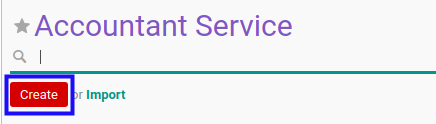

Terminologi
Konfigurasi
- Konfigurasi Terkait Accountant Service
- Konfigurasi Terkait Partner Arrangement
- Konfigurasi Terkait Accountant Report Opinion
- Konfigurasi Terkait Accountant Report Method
Accountant Service
Accountant Service adalah fitur yang digunakan untuk konfigurasi accountant service.
- Penjelasan Accountant Service
- Membuat Accountant Service
- Memodifikasi Accountant Service
- Menambahkan Signing Partner
- Memodifikasi Signing Partner
- Menghapus Signing Partner
- Menambahkan Opini
- Memodifikasi Opini
- Menghapus Opini
- Menambahkan Pertanyaan
- Memodifikasi Pertanyaan
- Menghapus Pertanyaan
- Menambahkan Jawaban
- Memodifikasi Jawaban
- Menghapus Jawaban
- Menambahkan Method
- Memodifikasi Method
- Menghapus Method
- Menghapus Accountant Service
- Menonaktifkan Accountant Service
Penjelasan Accountant Service
Informasi pada Accountant Service dibagi menjadi beberapa bagian, yaitu:
- Header
- Tab Python Code
- Tab Signing Partner
- Tab Opinions
- Tab Quality Control
- Tab Methods
- Tab Policy
- Tab Description
HEADER

Name
Nama accountant service.
Internal Reference
Nomor referensi Internal.
Active
Penanda status accountant service aktif.
Assurance Service
Penanda status assurance service aktif.
Code
Kode accountant service.
Sequence Creation Method
Metode nomor urut pembuatan accountant service.
TAB PYTHON CODE

Python Code for Custom Sequence Generation
Kode Python untuk membuat nomor urut yang diinginkan.
TAB SIGNING PARTNER

Pop Up Signing Partner saat add an item diklik.

Signing Partner
Partner yang ditunjuk.
Sequence
Nomor urut.
Allowed To Confirm
Apabila aktif user dapat mengkonfirmasi.
Allowed To Validate
Apabila aktif user dapat memvalidasi.
Allowed To Cancel
Apabila aktif user dapat membatalkan.
Allowed To Restart
Apabila aktif user dapat merestart.
TAB OPINIONS
Opinion Required
Penanda dibutuhkan opinion aktif.
Pop Up Allowed Opinion saat add an item diklik.

Opinion
Nama opini.
Code
Kode opini.
TAB QUALITY CONTROL

Pop Up Questions saat add an item diklik.

Question
Item pertanyaan untuk kontrol kualitas.
Sequence
Urutan pertanyaan.
Type
Tipe jawaban untuk kontrol kualitas (kualitatif atau kuantitatif).
Min. Value
Nilai minimum jawaban.
Max. Value
Nilai maksimum jawaban.
Value
Jawaban.
Correct Answer
Penanda jawaban yang benar.
TAB METHODS
Method Required
Penanda dibutuhkan metode aktif.
Pop Up Allowed Method saat add an item diklik.

Method
Nama Metode.
Code
Kode Metode.
TAB POLICY
Allowed To Confirm
Apabila aktif user dapat mengkonfirmasi.
Allowed To Validate
Apabila aktif user dapat memvalidasi.
Allowed To Cancel
Apabila aktif user dapat membatalkan.
Allowed To Restart
Apabila aktif user dapat merestart.
TAB DESCRIPTION

Description
Deskripsi accountant service.
Membuat Accountant Service
A. INPUT
(Tidak ada instruksi khusus)
B. LANGKAH KERJA
- Buka menu Accountant Report -> Configuration -> Accountant Service. Abaikan jika sudah berada pada menu yang dimaksud.
- Klik tombol Create pada bagian atas-kiri form.

- Isi Name. Wajib diisi.
- Isi Internal Reference. Tidak wajib diisi.
- Aktifkan/ Deaktifkan Active. Tidak wajib diisi.
- Aktifkan/ Deaktifkan Assurance Service. Tidak wajib diisi.
- Isi Code. Tidak wajib diisi.
- Pilih Sequence Creation Method. Wajib diisi.
- Beralih ke tab Python Code.
- Isi Python Code for Custom Sequence Generation. Tidak wajib diisi.
- Beralih ke tab Signing Partner.
- Tambah/Modifikasi/Hapus Signing Partner. Ulangi langkah ini sampai Signing Partner sesuai dengan keinginan.
- Beralih ke tab Opinions.
- Aktifkan/ Deaktifkan Opinion Required. Tidak wajib diisi.
- Tambah/Modifikasi/Hapus Opinion. Ulangi langkah ini sampai Opinion sesuai dengan keinginan.
- Beralih ke tab Quality Control.
- Tambah/Modifikasi/Hapus Question. Ulangi langkah ini sampai Question sesuai dengan keinginan.
- Beralih ke tab Methods.
- Aktifkan/ Deaktifkan Method Required. Tidak wajib diisi.
- Tambah/Modifikasi/Hapus Method. Ulangi langkah ini sampai Method sesuai dengan keinginan.
- Beralih ke tab Policy.
- Pilih Allowed To Confirm. Tidak wajib diisi.
- Pilih Allowed To Validate. Tidak wajib diisi.
- Pilih Allowed To Cancel. Tidak wajib diisi.
- Pilih Allowed To Restart. Tidak wajib diisi.
- Isi Description. Tidak wajib diisi.
- Klik tombol Save pada bagian atas-kiri form.

C. OUTPUT
- Data Accountant Service akan terbuat.
Memodifikasi Accountant Service
A. INPUT
- User yang akan memodifikasi harus memiliki akses untuk memodifikasi konfigurasi Accountant Service.
B. LANGKAH KERJA
- Buka menu Accountant Report -> Configuration -> Accountant Service. Abaikan jika sudah berada pada menu yang dimaksud.
- Buka data Accountant Service yang akan dimodifikasi. Abaikan jika data sudah dibuka.
- Klik tombol Edit pada bagian atas-kiri form.

- Isi dan sesuaikan Name jika dibutuhkan. Wajib diisi.
- Isi dan sesuaikan Internal Reference jika dibutuhkan. Tidak wajib diisi.
- Aktifkan/ Deaktifkan Active jika dibutuhkan. Tidak wajib diisi.
- Aktifkan/ Deaktifkan Assurance Service jika dibutuhkan. Tidak wajib diisi.
- Isi dan sesuaikan Code jika dibutuhkan. Tidak wajib diisi.
- Pilih dan sesuaikan Sequence Creation Method jika dibutuhkan. Wajib diisi.
- Beralih ke tab Python Code.
- Isi dan sesuaikan Python Code for Custom Sequence Generation jika dibutuhkan. Tidak wajib diisi.
- Beralih ke tab Signing Partner.
- Tambah/Modifikasi/Hapus Signing Partner. Ulangi langkah ini sampai Signing Partner sesuai dengan keinginan.
- Beralih ke tab Opinions.
- Aktifkan/ Deaktifkan Opinion Required jika dibutuhkan. Tidak wajib diisi.
- Tambah/Modifikasi/Hapus Opinion. Ulangi langkah ini sampai Opinion sesuai dengan keinginan.
- Beralih ke tab Quality Control.
- Tambah/Modifikasi/Hapus Question. Ulangi langkah ini sampai Question sesuai dengan keinginan.
- Beralih ke tab Methods.
- Aktifkan/ Deaktifkan Method Required jika dibutuhkan. Tidak wajib diisi.
- Tambah/Modifikasi/Hapus Method. Ulangi langkah ini sampai Method sesuai dengan keinginan.
- Beralih ke tab Policy.
- Pilih dan sesuaikan Allowed To Confirm jika dibutuhkan. Tidak wajib diisi.
- Pilih dan sesuaikan Allowed To Validate jika dibutuhkan. Tidak wajib diisi.
- Pilih dan sesuaikan Allowed To Cancel jika dibutuhkan. Tidak wajib diisi.
- Pilih dan sesuaikan Allowed To Restart jika dibutuhkan. Tidak wajib diisi.
- Isi dan sesuaikan Description jika dibutuhkan. Tidak wajib diisi.
- Klik tombol Save pada bagian atas-kiri form.

C. OUTPUT
- Data Accountant Service akan berubah sesuai dengan perubahan yang dilakukan.